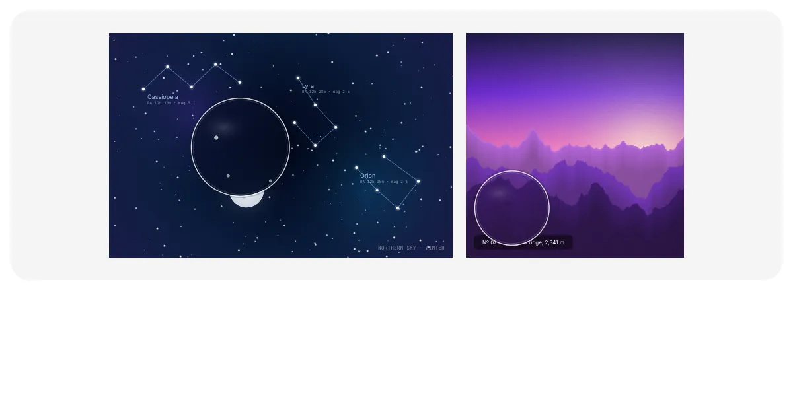

Lens
A magnifying glass over any painted scene: the content is re-painted larger inside a glassy circular lens.

Usage
Add glowkit next to eframe:
cargo add glowkit eframeThen draw it inside any egui Ui:
use glowkit::prelude::*;
use glowkit::effects::Lens;
Lens::new().zoom(2.4).radius(70.0).show(ui, vec2(520.0, 320.0), |painter, rect| {
paint_my_scene(painter, rect);
});Prefer to own the code? The glowkit CLI copies this component's source into your project, shadcn-style:
cargo install glowkit-cli
glowkit add lensEquivalent to
If you know this pattern from Magic UI and Aceternity UI, Lens is the Rust version: an original egui implementation, not a port, that runs natively and in WebAssembly.
- LensMagic UI
- LensAceternity UI
About Lens
Lens is one of 29 components in glowkit's Cursor & Interaction category. It lives in the glowkit-effects crate, enabled by the effects feature of glowkit (on by default). It reads its colors from the active glowkit theme, so it matches the rest of your app in light, dark or a custom brand theme, and every color, size and timing has a setter to override it.
Pointer-driven effects: click sparks and ripples, ribbon, pixel and image trails, smooth and target cursors, magnets, confetti and fireworks, lenses, scratch-to-reveal and before/after compare sliders.